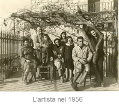
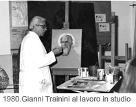
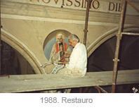

BIOGRAFIA
8 settembre 1923, nasce a Mompiano, borgo pedemontano alla periferia di Brescia, Gianni Trainini, primo di quattro fratelli (Nucci, Ines e Angelo con cui manterrà strettissimi legami per tutta la vita), da Aldina Meschini, casalinga, e Umberto Trainini fine artigiano stipettaio, assai versato nel disegno dei modelli da eseguire.
Umberto Trainini viene da famiglia di decoratori e pittori affreschisti da generazioni, attivi e ben noti in Lombardia e specificatamente in provincia di Brescia (il prozio Angelo, il cugino Giuseppe, i fratelli Luigi, Arturo, Giuseppe e il più conosciuto Vittorio).
Gianni Trainini dimostra, precocissimo, attitudine al disegno tanto che lo zio Vittorio lo prende con sé in età giovanissima, come aiuto per i lavori più facili e di servizio nell'impegnativa attività di decoratore e affreschista sacro, che lo zio svolge in numerose e importati commissioni a Brescia e in provincia. Si rinnova così l'antica tradizione della bottega d'arte rinascimentale, lo zio si rende subito conto del talento del giovane nipote e gli affida piccoli lavori di rifinitura e di decorazione più semplice, ma anche, quasi per scommessa un tondo con la figura del santo curato d'Ars, nel restauro della vecchia parrocchiale di Mompiano; il risultato è il sorprendente ritratto di un vecchio prete dall'espressione arguta e dallo sguardo dolcissimo; è il 1935 e il giovane apprendista ha 12 anni.
Dal 1935 al 1946 sono anni di lavoro frenetico, sotto il magistero dello zio Vittorio il giovane ruba con attenzione sempre crescente il mestiere antico e affascinante del dipingere a fresco.
La velocità dello zio nel dipingere sull'intonaco fresco prima che si asciughi è proverbiale e ammirata dai critici e dai colleghi, Gianni la studia, la impara con appassionata attenzione e la ricorderà e ne parlerà poi per tutta la vita.
La sua presenza nella squadra di Vittorio Trainini è costante e testimoniata in oltre 30 lavori.
Durante il servizio militare Gianni consegue con notevole sacrificio il diploma magistrale studiando senza interrompere il lavoro nelle pause dal servizio. Negli ultimi mesi del 1944 si unisce ai gruppi partigiani cattolici attivi in Val Trompia e in Valle Camonica.
Alla fine della guerra frequenta l'Accademia di belle arti di Venezia avendo per compagni di studi Santomaso e Vedova.
Anni di sacrificio, ma di grande fervore e curiosità per un mondo artistico che gli si apre nella frenetica febbre di libertà espressiva che si respira a guerra finita e all'avvio della ricostruzione. Collabora ancora con lo zio fino al conseguimento del diploma nel 1946.
Nel 1947 esegue il primo lavoro autonomo a Ponte di Legno, Cappella di Villa Luzzago e a seguire i primi importanti lavori nella parrocchiale di Marmentino, con affreschi parietali di notevoli dimensioni. Fin da questi primi lavori sia nella decorazione che nelle figure rivela uno stile proprio che si confermerà e perfezionerà negli anni, una leggerezza aerea e una grande leggibilità dei soggetti nella semplicità legata alla tradizione della storica pittura bresciana.
Le commissioni si susseguono sempre più importanti in provincia di Brescia e Trento.

È del 1956 la prima notevole esperienza nel disegno di vetrate per l'abbazia dei Benedettini di S. Maria della Scala a Noci in Provincia di Bari. Questa nuova tecnica e attività avrà un seguito con tanti importanti lavori in tutta Italia e anche in America.Nel 1957 Sposa Maria Becalossi, sarà la compagna discreta della sua vita, al suo fianco sempre, consigliera e ispiratrice preziosa.
In questi anni comincia l'attività didattica con la cattedra di disegno al Liceo Scientifico Calini.
Subito rivela qualità didattiche eccezionali e doti di comunicativa umanità straordinarie, alla sua morte saranno numerosi gli allievi di quegli anni lontani che lo vorranno ricordare e rendergli omaggio.
Dal 1958 la sua attività artistica compare a Chieti, in Abruzzo, località e provincia che saranno importantissime per la sua evoluzione d'artista e per la sua vita di relazione e di rapporti umani. Lì avrà per quarant'anni una casa e vi passerà tutti i periodi estivi godendo di un posto che sentiva vicino al proprio spirito, per la natura, per i colori per la disponibilità della gente.
Interessante sarebbe approfondire quale influenza abbia avuto su un artista di origine, di cultura, di carattere tradizionalmente bresciano, l'impatto e l'inserimento in un ambiente meridionale e particolarmente abruzzese.
Di fatto la pittura di Gianni Trainini fin dai primi contatti con S. Vito Chietino si arricchisce, assimila e fonde con i caratteri del nord le peculiarità del sud. I vasti orizzonti marini dell'Adriatico, i brillanti, a volte anche violenti, toni delle boscose pendici della Maiella, ma anche il contatto con la pittura che trova nelle chiese dei borghi con cui viene in contatto, nelle piccole botteghe antiquarie della provincia, tutto questo entra nel mondo del nostro artista e vi lascia segni pensosi e profondi.
Ecco allora il primo lavoro nel meridione: 1958, il grande crocifisso ad olio su tavola di legno nella chiesa Parrocchiale di Fossacesia a cui seguono numerose opere sia ad olio che a fresco, restauri, decorazione ex novo nelle parrocchie della provincia di Chieti anche in strutture antichissime romaniche e medievali come S. Giovanni in Venere.

Per oltre 30 anni la sua attività si alternerà fra la provincia di Chieti e un po' tutto il meridione e la provincia di Brescia. All'attività di pittore decoratore e all'insegnamento si aggiungerà via via quella di restauratore, affinando anche in questo campo una notevole tecnica. Restauro quindi non solo di opere a fresco, ma anche di antichi dipinti ad olio su tavola o su tela, questa nuova attività nasce ed acquista importanza in seguito al suo appassionarsi di raccoglitore di opere ed oggetti antichi. Il suo operare come pittore anche in piccoli centri è occasione di incontro, di scoperte, di scambi di studi veramente stimolanti.Nel 1974, su commissione del Cardinale Fagiolo esegue la sua opera più raffinata e preziosa, si tratta della piccola cappella del Palazzo Vescovile di Chieti. L'impressione che se ne ha all'entrare è di uno scrigno di assoluta bellezza e spiritualità profondissima in un isolamento meditativo totale.
Dal 1967 la sua attività didattica è arricchita da un evento importante per lui personalmente, ma anche per la città di Brescia. In questi anni fonda insieme ad altri professionisti e docenti bresciani il liceo artistico "Vincenzo Foppa" in cui terrà per tanti anni e con lusinghieri risultati di insegnamento, la cattedra di figura.
Nel 1970 tiene corsi serali a giovani pittori locali nella loggetta di Piazza della Loggia, confermando la sua passione per l'insegnamento, da fine conoscitore dell'animo umano è capace di mostrare sapientemente le proprie competenze senza per questo intimidire i giovani allievi. Raramente interviene nella parte creativa degli artisti, ma sempre attento e puntuale nelle osservazioni, altrettanto raramente lascia passare gli errori di tecnica.
Nel 1971 Per la nuova chiesa parrocchiale di Mompiano, il posto dove è nato, realizza la decorazione completa, le vetrate e l'affresco più grande della sua carriera.
Tema arduo da illustrare e oltremodo impegnativo: il Magistero della chiesa nel rapporto fra l'umanità e il Divino.
Risolve con notevoli novità nel suo stile: figure su diversi piani prospettici e raffinatissimi schermi policromi di varia luminosità. A dare senso di ascesi in una chiarità sempre più rarefatta.
L'opera, oggi ad oltre trent'anni è ancora attualissima e discussa, segno inequivocabile di intatta vitalità.

Riservata quasi segreta l'opera di pittore di cavalletto, Gianni Trainini dipinge in studio e en plain air da sempre, dall'autoritratto giovanile in cui si riproduce in poi.Da sempre considera questa attività un angolo personale e riservato di meditazione, in assoluta libertà di pensiero senza gli obblighi di forma che i lavori, soprattutto di soggetto sacro gli impongono.
Geloso delle proprie opere ne fa partecipe l'amatissima moglie che spesso gli sarà modella e pochi amici, solo quelli a cui si sente idealmente affine.
Il rifiuto ostinato a partecipare a qualsiasi mostra fa sì che questi lavori siano quasi sconosciuti: la maggior parte rimasero in casa, di proprietà della vedova fino alla sua morte a giugno 2021, pochissimi in importanti collezioni private.
Paesaggi, ritratti, nature morte (notevole una serie di fagiani dove nel realismo descrittivo si inserisce una inquietudine esistenziale insolita nello stile di Trainini.
Ariose, leggerissime visioni marine, ritratti di grande carattere (qui è più evidente la mano dell'affreschista e del maestro di figura).
Oltre a tutto questo una quantità impressionante di cartoni (la matrice da cui nasce, dopo che l'autore ripassa col chiodo e poi con lo spolvero, il disegno sulla parete a fresco. Tutto materiale importantissimo da raffrontare con le opere finite. Gianni Trainini portava sempre con sé, abitudine mutuata dallo zio Vittorio, un taccuino per fermare impressioni, profili, espressioni, che gli servivano poi per il lavoro. Tantissimi appunti quindi di cui alcuni sono vere e proprie lezioni di disegno, taccuini di vacanze, schizzi di getto fatti in spiaggia o durante una gita (notevoli alcuni disegni dal Marocco) sempre presente e prepotente la figura umana, vi si sente l'autentico piacere di rimodellare sulla carta corpi stesi al sole o in movimento. Intensi del piacere di vivere i disegni dell'ultima estate con la stessa serenità dei primi disegni da ragazzo.
Fra le opere degli ultimi anni, a cavallo tra il 1995 ed il '96, è da ricordare il restauro di Palazzo Faroni con la decorazione con nuovi affreschi e fregi di putti nei saloni.
Negli ultimi mesi di vita realizza affreschi in una villa a Tenno nei pressi di Riva del Garda. Dipinti di viva curiosità creativa che certo non fanno pensare ad una vena di creatività esaurita, o alla introspezione malinconica di un artista minato dal male e prossimo alla conclusione del suo viaggio.
Gianni Trainini muore il 18 gennaio 2001.
{kind=link}
{kind=link}
{kind=link}